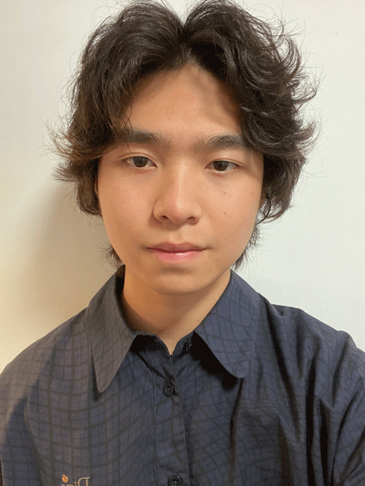

Jason Zeng
Jason is currently a sophomore student studying to become a visual communication designer in San Francisco State University. His passion gravitates to a wide variety of things. He loves fashion, music (especially playing guitar), photography, films, skateboarding. Pursuing his passion and incorporating them into his creation and work is his ultimate goal as a designer. However, he always looks forward to incorporating other fields with an open minded mentality. He believes that team work makes the dream work.
Following up, a little background of Jason! To begin with, he’s a Chinese student who moved to San Francisco about 6 years ago. He was born and raised in Guangzhou, China and moved to California at the age of 13. Guangzhou is a very culturally based city located in South of China, south-central of Guangdong province to be exact. Some ways similar to San Francisco, in terms of welcoming diversity and differences. The experience of living from one place to another really enhanced his imagination to infinite possibilities, had him exposed to many great inspirations to not only reshape him as a person but challenge his creative pathfinding and execution. Following in the other pages are some artists he’d love to show you! As mentioned above, there are many things in life that motivates him to create but music and movies are undoubtedly his biggest inspirations among all things. As if they create a new dimensional space that only exists for the span of 2 hours, he loves capturing those feelings and turning them into his own language but also as a homage to these artists that he loves.
All in all, expressing his own emotions and representing his culture behind his work means a great deal to him. Art has no vitality if there are no emotions and stories to convey.
